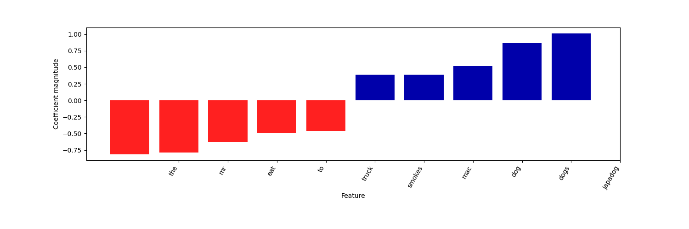
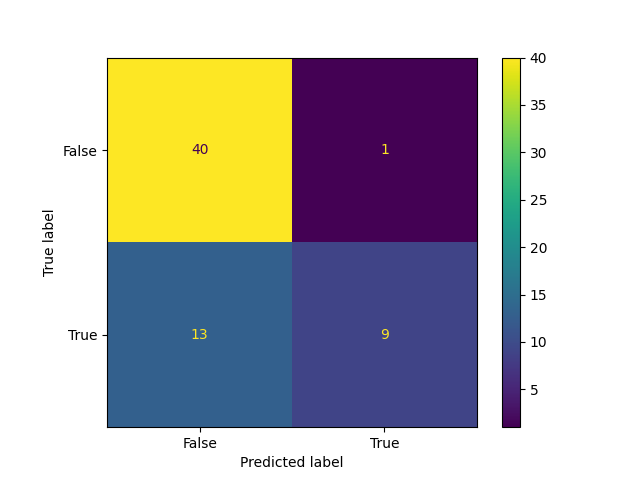

| fit_time | score_time | test_score | train_score |
|---|---|---|---|
| 0.0547 | 0.002 | 0.6923 | 0.8 |
| 0.0039 | 0 | 0.7692 | 0.82 |
| 0 | 0.005 | 0.7692 | 0.82 |
| 0 | 0 | 0.9167 | 0.7843 |
| 0.009 | 0 | 0.75 | 0.8235 |
Predicting food specialization from a food vendors’ names.
A comprehensive classifier analysis on the association of vendor names with its description
Summary
In this project, we used decision trees, logistic regression, and a Naive Bayes classifier to identify whether or not a food vendor sells hot dogs via their name. We trained each model individually using a cross-validation setup, and we compared the scores of the accuracy in order to determine a model to train and to compare to the test data. The model we chose, finally, was the Naive Bayes, as it provided a slightly better score and less underfit and overfit than the other models present. Finally, we validated it with our test data and came to the conclusion that even though it is good enough for classifying most of the cases, it still struggles discerning from the minority class, which in our case, is our target.
Add results into the Summary section
Introduction
Food trucks and mobile food vendors are a common sight in Downtown Vancouver, offering a wide range of cuisine types from hot dogs and burgers to shawarma and tacos. With so many different vendors and food options, it can be useful to automatically identify what kind of food a vendor specializes in based only on select information. In this project, we study whether we can predict if a food vendor is a hot dog vendor or not using the vendor’s business name. We used a publicly available dataset of mobile food vendors in Vancouver from the City of Vancouver’s open data portal, where each row represents relevant information for a single food vendor and includes columns such as BUSINESS_NAME, LOCATION, DESCRIPTION, GEO_LOCALAREA, and geographic coordinates. For our analysis, we constructed a binary target variable named is_hotdog, which is True when the DESCRIPTION is “Hot Dogs” and False otherwise. This allows us to investigate how much information about the type of food a vendor sells can be extracted from the business name, as well as putting to test the prediction power of some of the most common classification algorithms: Decision Trees, Logistic Regression, and Naïve-Bayes.
Add references (food vendors/trucks in vancouver) into the Intro section, it is impoart to know the category of food distributed through out vancouver for new liscencing, the public can find it easily and we can ensure an even distribution of different categories of food. In this case, we will be focused on predicting hotdogs
Methods
Data
The data set used in this project is Street food vending created by the City of Vancouver(Vancouver 2025b). It was sourced from the City of Vancouver Open Data Portal(Vancouver 2025a) and can be found here. Each row in the dataset represents a food vendor and includes information such as the business name, description, and location. In this project, we derive the binary target is_hotdog from the DESCRIPTION column (“Hot Dogs” vs other descriptions) and use the BUSINESS_NAME as the main predictor in our models.
Before splitting the data into training and test sets and fitting models, we perform basic data validation on the raw tabular data to check that it is well-formed and consistent with our expectations. We expect the food-vendors data to come from a CSV file that can be read into a non-empty pandas DataFrame. If the download fails or the file is not in the expected tabular format, we want the analysis to stop early instead of producing confusing errors later.
Analysis
Performed EDA, and 4 different models to compare before choosing the best score for evalution…
We chose to split our data with 70% used for training and 30% used for test evaluation.
EDA
Given that we are interested in solely the classification power of the name, we will be taking a look more into the classes present into our training set.
Baseline
We will be using a dummy classifier as a baseline to compare our different models. For this and all our models we will use 5 cross validation folds.
For this analysis we will implement a CountVectorizer object to create a bag of words (BOW). This method will split each individual word in the names of the businesses into its own individual columns, and will assess whether or not the word is present in the data set.
We will then pass this CountVectorizer into a pipeline with the different models we want to test:
DummyClassifier: This will be our baseline to check on how we will predict whether or not the vendor sells hot dogs or not. DecisionTreeClassifier: This simple model will help us identify if simple decisions map out the relationship of the names to the category. LogisticRegression: This model will help us identify if there are linear relationships in the model, and which tokens are more relevant for our classification. BernoulliNB (Naïve-Bayes): This model is quick to fit and train, and uses a probabilistic approach to the classification, and it would be interesting to see how it fares in comparison to the rest of them. After performing the evaluation for each model, we will compare them all together and train the best one, optimising its hyperparameters. We will score based on the model accuracy (correct predictions over total predictions), as this is just a simple experiment to validate the relationship of these 2 variables.
With the best model, we will take a peek on how it performs on the test data, and evaluate our conclusions.
Results
EDA
Add EDA results here
When visualizing our EDA (W3Schools 2025) we can notice several key points. From Figure 1, we can see that of all the cuisine types from Downtown Vancouver food vendors, hot dog stands seem to be the most common of them all. It is also very important to analyze our classes before starting our work. When you have a large class imbalance, a lot of the times your model will give you a score that is not representative of whether or not your model works well. For example, if you observe the second plot for a data set where one class is represented in a much higher proportion than the other, a model like DummyClassifier will give you an extremely high score. This isn’t because the model works perfectly it’s because it’ll always predict the higher represented class! Yet we can see from Figure 2 that we do not have that issue as much here as the class imbalance isn’t too severed. Lastly, we noticed that there were some initial blanks in the BUSINESS_NAME which we addressed by changing it to an empty space (and thus not screwing up the CountVectorizer instance we will need for this analysis). We can observe from (blank-names?) that all the cases of a blank BUSINESS_NAME are belong to Hot Dog vendors, which would be something we would like our models to capture. Finally, we would expect for our classifier to be able to identify the “easy” base case of having no name, since this is a relevant discriminator for both our classes.

Baseline
Code result value of 0.65 here
As expected, we can see from ?@tbl-dummy-cv the dummy consistently predicts the majority class, with accuracy of around {python} dummy_accuracy, being consistent with the representation of our split.
Decision Tree
update code result value here
Here we are training a simple decision tree to identify whether the vendor sells hot dogs or not. This is a simple model with easy to interpret coefficients, and it would be interesting checking whether or not it correctly identified some of the most relevant clues (something like “Joe’s Hot Dogs” being correctly classified, for instance).
From ?@tbl-decisiontree-cv, we can see that the decision tree performs worse than the dummy classifier, as it is overfitting the prediction, which is evident in the substantial gap between the validation and training scores (around {python} decisiontree_accuracy difference for all folds).
update code result for 34 levels here
By taking a look at the depths and tree structure from Figure 4 to better understand these discrepancies. As we can see, the model contains 34 levels of decisions, yet, the level of specificity (given that we are using a bag of words) makes it perform poorly. Here we can see (figure 4) the most discriminating factors. We can observe some sensible initial discriminations, such as “dogs”, “japadog” and “dog”, which would quickly identify the vendor as a Hot Dog place.
Here we can observe Figure 5 and misses in the cross validation of the model trained. We can observe that the model is very good at identifying when something seems “Hot-Doggy”, yet, it produces a high degree of false positives. We can observe some of the mistakes below (table 8). Here we are seeing that the model tends to predict most of the time that the vendor is a hot dog stand, with probably the only reasonable exception being Van Dog.
Table 8: Mismatches for Decision Tree.
add table
Logistic Regression
Here we will train a logistic regression in order to see whether or not we can improve our accuracy and reduce the possible overfitting. This model also has the advantage of having interpretable parameters, which in our case relate how often each of our features is associated with the target variable (is_hotdog = True).
From Table 1 We can see a slight improvement in generalisation from the decision tree, but it performs not much better than the dummy regressor with an average validation score of np.float64(0.779). This could indicate that there may not be a single independent linear relationship in the token features to the target. Also it is worth noting that the model has a lot variability between folds.
From Table 2 and Figure 6, we can see that the coefficients associated roughly match with the choices determined by the decision tree, with “japadog”, “dog”, and “dogs” being relevant. Yet if we observe the intercept, we see the model is heavily biased into making a negative prediction. Thus, we would not expect the model being good in identifying hot dog places in particular.
The number of coefficients produced is 95
The intercept is -0.33
| fit_time | score_time | test_score | train_score |
|---|---|---|---|
| 0.0547 | 0.002 | 0.6923 | 0.8 |
| 0.0039 | 0 | 0.7692 | 0.82 |
| 0 | 0.005 | 0.7692 | 0.82 |
| 0 | 0 | 0.9167 | 0.7843 |
| 0.009 | 0 | 0.75 | 0.8235 |

In Figure 7 we can observe the confusion metrics and misses in the cross validation of the model. We can observe that the logistic regression is not particularly good at discriminating, since it is evidently favouring the “not hot dog” class, as we expected from the coefficients calculated. We can also see the patterns for the mismatches in Table 3. We can see the model failed identifying some of the “easy” catches we found previously, such as identifying blanks or keywords like “dog” which do not skew the balance enough in favour of the target class.

| y | y_hat | probabilities | x |
|---|---|---|---|
| False | True | [0.48486372091146257, 0.5151362790885374] | Van Dog |
| True | False | [0.5575291620674792, 0.4424708379325208] | nan |
| True | False | [0.5665436668638206, 0.43345633313617943] | nan |
| True | False | [0.5665436668638206, 0.43345633313617943] | nan |
| True | False | [0.5951209415798449, 0.4048790584201552] | nan |
| True | False | [0.5951209415798449, 0.4048790584201552] | nan |
| True | False | [0.5951209415798449, 0.4048790584201552] | nan |
| True | False | [0.6011852449918378, 0.39881475500816216] | nan |
| True | False | [0.6011852449918378, 0.39881475500816216] | nan |
| True | False | [0.6011852449918378, 0.39881475500816216] | Holy Smokes |
| True | False | [0.6011852449918378, 0.39881475500816216] | Mac BBQ |
| True | False | [0.6048256520648894, 0.39517434793511064] | nan |
| True | False | [0.6048256520648894, 0.39517434793511064] | nan |
| True | False | [0.6048256520648894, 0.39517434793511064] | nan |
Naïve-Bayes
Finally we will be testing the Naïve-Bayes model, which is also a relatively simple model that also does not tend to over-fit as much, just to see which model is best. The cross validation scores and time are shown in Table 4. We can also see that it performs better than the tree and dummy with less overfit, although not very consistently, like the logistic regression.
| fit_time | score_time | test_score | train_score |
|---|---|---|---|
| 0.0079 | 0.0008 | 0.6923 | 0.8 |
| 0.0012 | 0.0005 | 0.7692 | 0.82 |
| 0.001 | 0.0005 | 0.7692 | 0.82 |
| 0.001 | 0.0005 | 0.9167 | 0.7843 |
| 0.001 | 0.0005 | 0.75 | 0.8235 |
Here we can observe the confusion metrics and misses in the cross validation of the model trained in Figure 8. It performs quite similar to the logistic regression, as we can see is not particularly good at identifying hot dog features.
From the mismatches in Table 5, we see a similar pattern as the logistic regression, failing to identify the “obvious” patterns we stated in the beginning.
| y | y_hat | probabilities | x |
|---|---|---|---|
| False | True | [0.3642228229895249, 0.6357771770104746] | Van Dog |
| True | False | [0.6544133650223363, 0.34558663497766406] | nan |
| True | False | [0.6839649670539567, 0.3160350329460436] | nan |
| True | False | [0.6839649670539567, 0.3160350329460436] | nan |
| True | False | [0.7066548087250116, 0.29334519127498854] | nan |
| True | False | [0.7066548087250116, 0.29334519127498854] | nan |
| True | False | [0.7066548087250116, 0.29334519127498854] | nan |
| True | False | [0.7247833230416214, 0.27521667695837865] | nan |
| True | False | [0.7247833230416214, 0.27521667695837865] | nan |
| True | False | [0.7247833230416214, 0.27521667695837865] | Holy Smokes |
| True | False | [0.7247833230416214, 0.27521667695837865] | Mac BBQ |
| True | False | [0.7834187709904163, 0.21658122900958396] | nan |
| True | False | [0.7834187709904163, 0.21658122900958396] | nan |
| True | False | [0.7834187709904163, 0.21658122900958396] | nan |
Model Comparisons
Knowing this, we can compare their scores to determine the model to train. As shown in table 14, we can see a negligible difference between Naïve-Bayes and LR. Yet, to be able to proceed, we will proceed train Naïve-Bayes classifier, as it is also a relatively simple model with slighlty faster fitting time.
table 14: Comparisons of mean values of scores and times for all models.
Best Model Hyperparameter Optimisation
Here we will perform the optimisation of our model. Given that we chose the Naïve-Bayes estimator, we will optimise the alpha hyperparameter (which controls the tradeoff between variance and bias of our model), as well as the max_features variable (the actual size of our vocabulary considering the top max_features words) of our CountVectorizer, as this can also play a role in overfitting.
We are using a randomised approach to test in a wide space, with 500 iterations and a random integer ranging from \([5, \text{size of the vocabulary}]\) for max_features, and a loguniform distribution ranging from \([0.001, 1000]\) for alpha.
After this, we will use the best parameters obtained, and train our best model. The best hyperparameters for the best model is shown in table 15.
Table 15: Best hyperparameters for the best model (Logistic Regression).
We can observe a slight increase in the validation score, but in order to prevent overfitting on the validation set, we will compare our model with the actual test data:
insert test score here of 0.714
The model performs quite similar to the validation score, which likely tells us that it was able to generalise and learn. In order to validate this assumption, we can take a look at the confusion matrix. In figure 9, we can see that, although the model makes good predictions, it still fails to raise the “hot dog alert”. In table 16, we can further see the failed classifications. Save for the first one, which we would even classify as a hot dog stand, it still missed some of the cues we identified at the beginning, meaning this model will probably will encounter this limitations in future predictions.
Fig. 9: Confusion matrix for the best classifier
Table 16: Mismatches for best model.
Discussion
We compared the performance of 4 different models (Dummy, Decision Tree, Logistic Regression, and Naive-Bayes), and we proceeded with Naive-Bayes, therefore, we chose Naive-Bayes to move forward with hyperparameter tuning. We used RandomizedSearchCV to identify the best hyperparameter values for Max Features and alpha, and evaluated the best model with the test set.
As we saw, there are several limitations to what a count vectorizer and a binary classification can perform. The relationships that we found within our variables are probably not linear, as there are some cases where the biases of our more intelligent classifiers, such as the Bayesian and the logistic regression, would favor into classifying something as not hotdog, when we noticed from our EDA that it was those specific cases of no name where the model should have predicted that that was hotdog stand. This makes for a model that will be particularly good at identifying the majority class, which pretty much makes it comparable to a dummy. And thus, we observed the limitations of of our current estimators.
Now, depending on the context of our problem, we may lean in favour of having a model that is really good at predicting when something is not a hotdog, versus wanting a model that is really good at predicting when something is a hotdog.
Let’s say we have someone who doesn’t really like hot dogs that much. We would prefer a model that probably outputs more consistently or classifies non-hot dog places as non-hot dog places where this default probably like opens up possibilities for someone looking for options that are likely not hot dog related. And it is not too terrible if hot dog place slides in given that it is the fewer of the bunch.
For that particular case, our model probably is the one fitting better into that narrative as it is consistent enough to determining or correctly classifying the null class even though if it’s not as good as classifying the positive class.
Now, in the context of someone really craving a hot dog and wanting to be very sure that that is a hot dog place, then probably the best model that we trained will not fit into that description as much, since it’s not particularly good into predicting a class. For that case, it would have been better to train probably a decision tree, which we saw had much higher bias into identifying the hot dog class.
A test accuracy of 0.71 shows that our model is still a work in progress, but it shows promising results from the confusion matrix, where it only has 1 FP. There are also 6 FN, as that is a byproduct of how the model learned the patterns.
Some challenges in the data set are the size. It is a small dataset with only ~90 entries. Another challenge is the imbalance of classes. It would be ideal if each class would represent roughly 50–50% of the samples. We believe that the imbalance was not severe, so we didn’t make any adjustments. In the future, we can take the argument “class_weight” into account during hyperparameter tuning for a model that supports it.
Finally, we could also add for future iterations, or as a different research question, whether an SVM would perform better given the conditions we have mentioned. It is likely that a nonlinear model will likely fare better since we have found some instances where the natural bias of logistic regression and Naïve-Bayes have pushed the model to incorrectly classify some of the examples.
References
Vancouver, City of. 2025a. “City of Vancouver Open Data Portal.” https://opendata.vancouver.ca/pages/home/.
———. 2025b. “Street Food Stationary Vending Permits.” https://vancouver.ca/doing-business/selling-food-on-vancouver-s-streets.aspx.
W3Schools. 2025. “CSS Colors.” https://www.w3schools.com/cssref/css_colors.php.